Дом
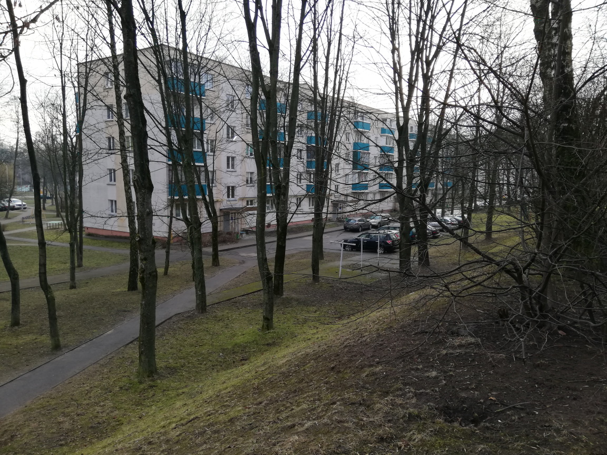 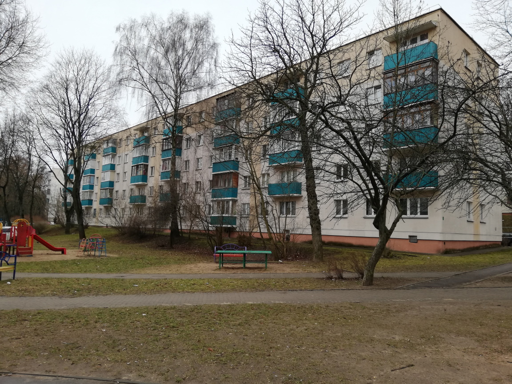 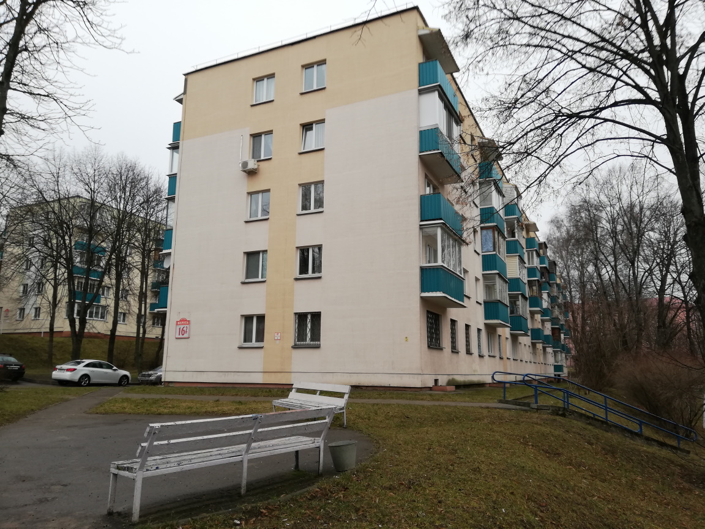 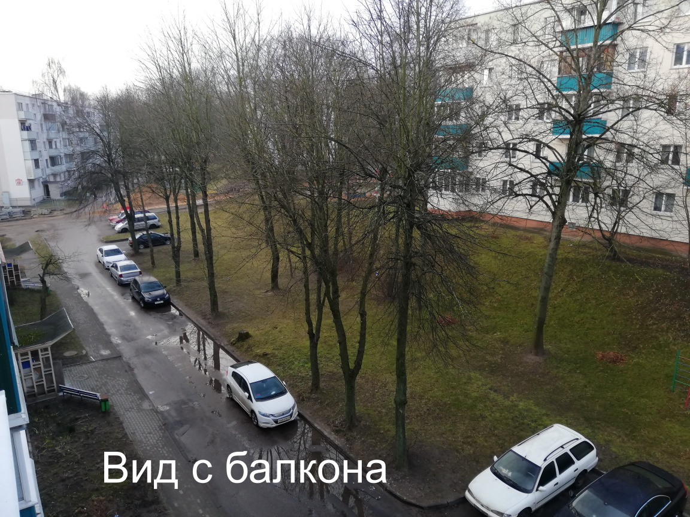
Капитальный ремонт
В 2009 году в доме проведен полноценный капитальный ремонт (теплоизоляция, замена коммуникаций).
Напомним, что с 2015 г. теплоизоляция не входит в капитальный ремонт.
Tеплоизоляция делает квартиру не только теплой зимой, но и предохраняет летом от излишней жары.
Подъезд
Чистый и свежий подъезд.
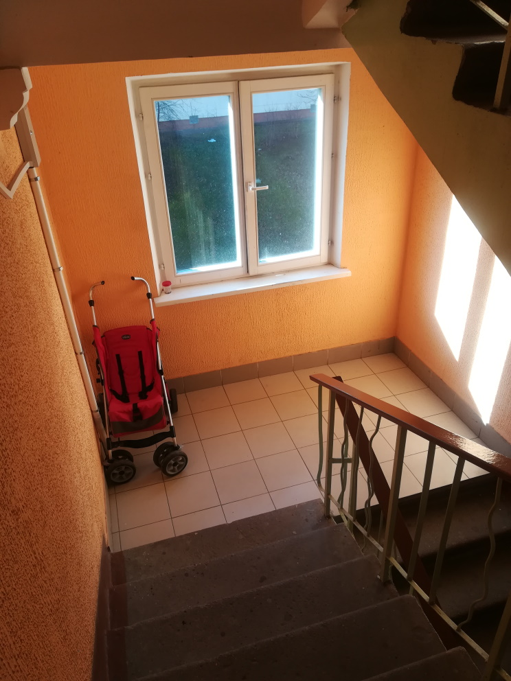 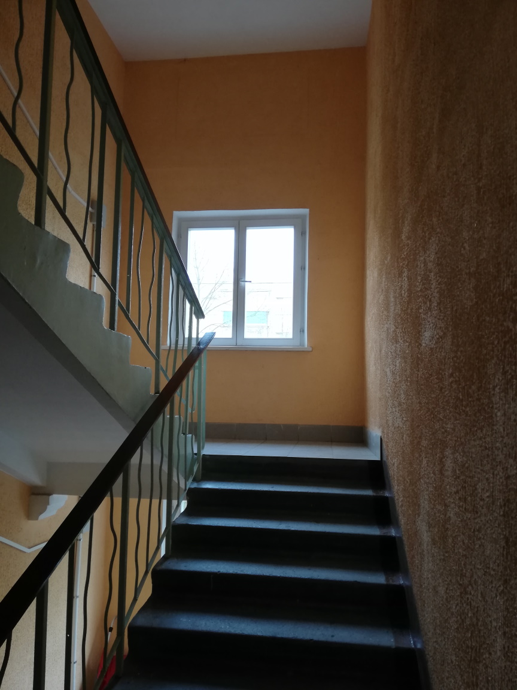
Подвал
В доме есть подвал, в котором находится наш блок 2x2x2 метра (примерно, не измерял).
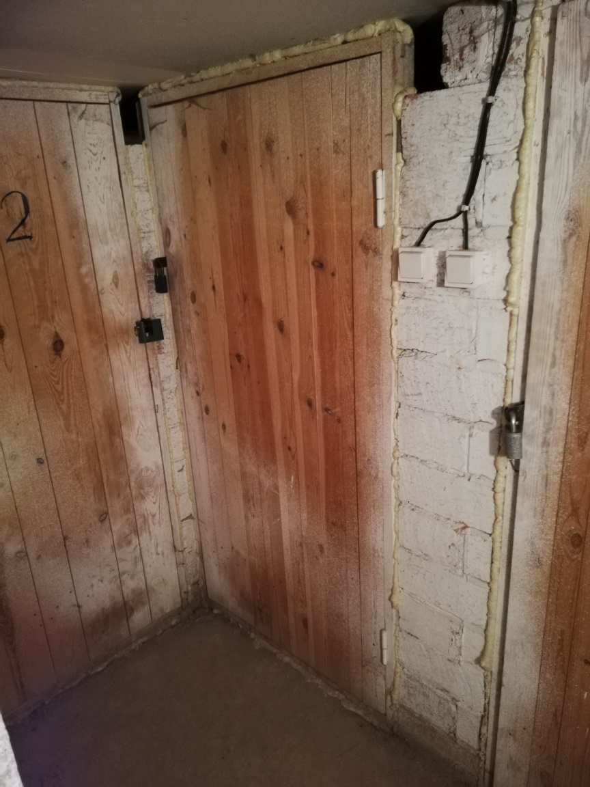
Есть возможность обустроить дополнительное место для хранения.
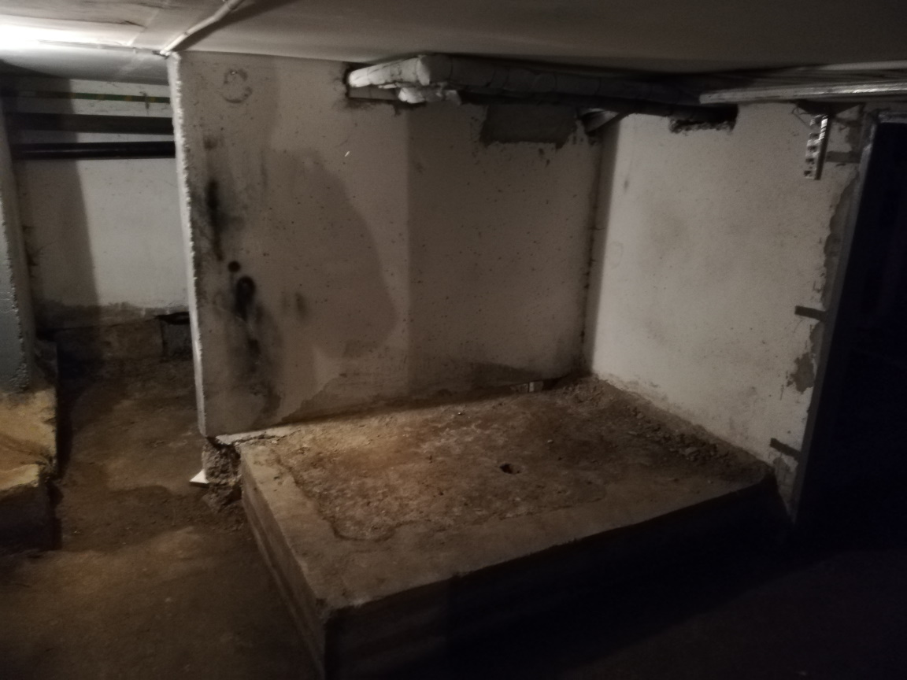
Двор
Зеленый чистый двор. Возле дома есть большая детская площадка.
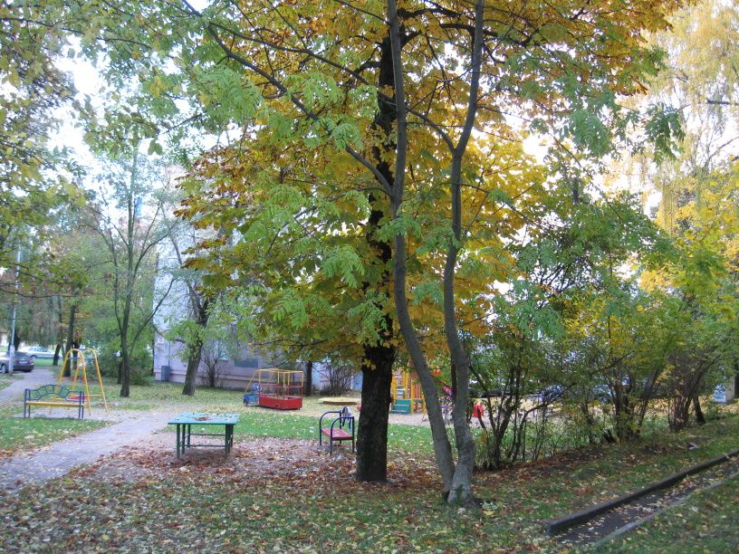 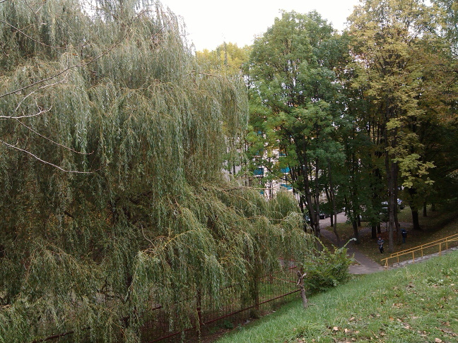 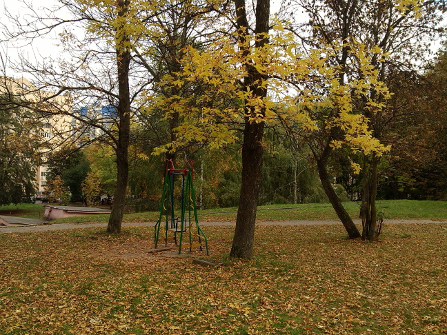
Квартал малоэтажной застройки
Квартал вокруг дома состоит из капитально отремонтированных домов, выгодно отличающихся от посеревших панелек.
Видеоцитата о корпусах дома №16 по ул. Берута с канала СНиП - Кацубо
Вы сможете оценить преимущества сформировавшегося квартала малоэтажной застройки по сравнению с построенными и еще строящимися переуплотненными нагромождениями высоток.
-
Возможность поставить машину под окнами (за 5 лет только раза 3 пришлось поставить не во дворе).
При этом водители не заезжают на тротуар и, тем более на зеленую зону, и практически никогда не подпирают друг друга.
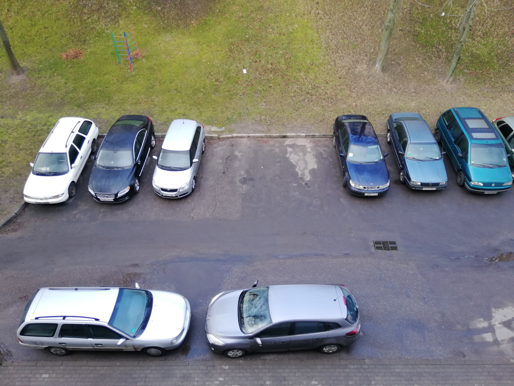 - Нет переполненной социальной инфраструктуры - детские сады и школы на выбор: в детские сады рядом с домом привозят детей с Каменной горки, ходит автобус "Малышок".
- В доме нет мусоропровода и, соответственно, неприятного запаха от него, как например в девятиэтажке по улице Берута, 6, корпус 1.
- Площадка для сбора мусора находится в 50 метрах от дальнего от нас торца дома и также полностью отсутствуют проблемы с запахом, при этом выносить мусор сравнительно недалеко.
Примечание
В настоящее время происходит замена теплотрассы (часть заезда к кварталу не заасфальтирована, а покрыта гравием).
Планируемое окончание работ - май 2020 (работают быстро).